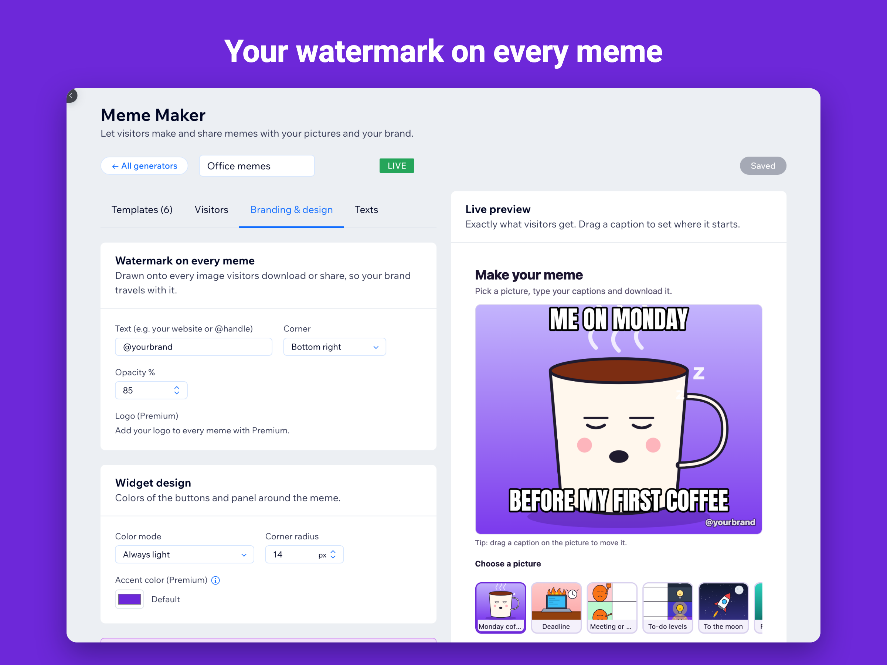

How to add a meme generator to a Wix site
Wix has no built-in meme maker, and coding one with Velo means handling canvas drawing, fonts, mobile touch and image downloads yourself. Meme Maker does all of that in a widget you drop on a page.
1. Install the app
Open Meme Maker in the Wix App Market and add it to your site. The app opens with a ready-made “Office memes” generator, so you can see it working right away.
2. Pick templates
In the dashboard, keep the demo or create a new generator from a pack: office, pets, sports fans, coffee shop, school, Halloween or classic formats. Each template is a picture plus captions. Add your own images from the media library, and drag captions in the live preview to place them.

3. Add your brand
In Branding, type your website or social handle as the watermark. It is drawn onto every meme visitors download or share. Premium adds your logo and a custom accent color.
4. Put it on a page
Open the editor, go to Add Elements, then App Widgets, and add Meme Maker to the page. Choose which generator to show in the widget settings, then publish. On phones the picture and the captions stack automatically.
5. Watch what people make
The Insights tab shows views, memes started, downloads, shares and which templates are most popular, so you know which jokes land with your audience.
Questions
Do I need a paid plan?
No. The Free plan includes one live meme generator with up to eight templates, unlimited memes, visitor photos, emoji, a text watermark, blocked words and eight languages. Premium adds more generators and templates, a logo watermark, email before download and removes the credit line.
See it in the Wix App Market